<?xml version="1.0" encoding="UTF-8"?>
<rss version="2.0"
	xmlns:content="http://purl.org/rss/1.0/modules/content/"
	xmlns:wfw="http://wellformedweb.org/CommentAPI/"
	xmlns:dc="http://purl.org/dc/elements/1.1/"
	xmlns:atom="http://www.w3.org/2005/Atom"
	xmlns:sy="http://purl.org/rss/1.0/modules/syndication/"
	xmlns:slash="http://purl.org/rss/1.0/modules/slash/"
	>

<channel>
	<title>ohadpr &#187; exper</title>
	<atom:link href="http://ohadpr.com/category/exper/feed/" rel="self" type="application/rss+xml" />
	<link>http://ohadpr.com</link>
	<description>ideas, hacks and stuff</description>
	<lastBuildDate>Tue, 29 May 2012 07:08:58 +0000</lastBuildDate>
	<language>en</language>
	<sy:updatePeriod>hourly</sy:updatePeriod>
	<sy:updateFrequency>1</sy:updateFrequency>
	<generator>http://wordpress.org/?v=3.3.1</generator>
		<item>
		<title>OpenGL Terrain Engine</title>
		<link>http://ohadpr.com/2001/08/opengl-terrain-engine/</link>
		<comments>http://ohadpr.com/2001/08/opengl-terrain-engine/#comments</comments>
		<pubDate>Sun, 12 Aug 2001 08:14:34 +0000</pubDate>
		<dc:creator>ohad</dc:creator>
				<category><![CDATA[computergaphics]]></category>
		<category><![CDATA[exper]]></category>

		<guid isPermaLink="false">http://ohadpr.com/?p=65</guid>
		<description><![CDATA[Update: iPad version released I started working on a terrain engine around October 2000. I was deeply moved by screenshots from black and white :) My intention and main goal was to create something visually stunning. This meant writing a &#8230; <a href="http://ohadpr.com/2001/08/opengl-terrain-engine/">Continue reading <span class="meta-nav">&#8594;</span></a>]]></description>
			<content:encoded><![CDATA[</p>
<p>
<b>Update:</b> <a href="../../../2010/07/terrain-ipad-app/index.html">iPad version released</a>
</p>
<p style="text-align: center;">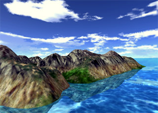</p>
<p style="text-align: center;">
<p style="text-align: left;"><span>I started working on a terrain engine around October 2000. I was deeply  moved by screenshots from <a href="http://en.wikipedia.org/wiki/Black_&_White_(computer_game)">black and white</a> :</span>)</p>
<p style="text-align: left;"><span>My intention and main goal was to create something visually stunning.  This meant writing a terrain texture-generator, and working hard to find good  textures and blending modes.</span></p>
<p>The outcome is an engine that hold a (supposedly) 1km by 1km piece of terrain  with very high accuracy. There is no triangle-cutting algorithm employed, simple  brute-force. I use a large terrain texture and a tiling detail texture. There&#8217;s  a skybox and the terrain reflects<span> on the water.</span></p>
<p>I used OpenGL for this  one, employing the OGLC skeleton to avoid most of the opengl-win32  business.</p>
<p>You can move through this world using descent keys (a,z,  keypad). use &#8216;w&#8217; to switch to wire-frame and &#8216;d&#8217; to render without the detail  texture.</p>
<p>A few screenshots:</p>
<p><a href="../../../wp-content/uploads/2008/08/terrain_shot_1.jpg">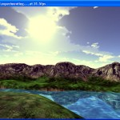</a> <a href="../../../wp-content/uploads/2008/08/terrain_shot_2.jpg">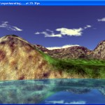</a> <a href="../../../wp-content/uploads/2008/08/terrain_shot_3.jpg">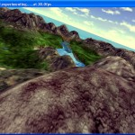</a></p>
<p><span><span style="text-decoration: underline;">Downloads :</span></span></p>
<p><span>Binary (win32) + Source: 		 <a href="../../../etc/exper/download/terrain%20engine.zip">terrain engine.zip</a> (compile in debug, release gives problems <br />
</span></p>
<p><span><span style="text-decoration: underline;">Thanks :</span></span></p>
<p><span>Yoni Lavi &#8211; dynamic camera and  general coordinate-system fixups.<br />
The  OpenGL Challenge &#8211; OpenGL skeleton-app.<br />
Dan Gonzalez Rodriguez &#8211; terrain texture  generator (CKCed) and figuring out the correct blending mode for the detail-texture.</span></p>
]]></content:encoded>
			<wfw:commentRss>http://ohadpr.com/2001/08/opengl-terrain-engine/feed/</wfw:commentRss>
		<slash:comments>4</slash:comments>
		</item>
		<item>
		<title>PQTorus</title>
		<link>http://ohadpr.com/2001/08/pqtorus/</link>
		<comments>http://ohadpr.com/2001/08/pqtorus/#comments</comments>
		<pubDate>Sun, 12 Aug 2001 08:14:23 +0000</pubDate>
		<dc:creator>ohad</dc:creator>
				<category><![CDATA[computergaphics]]></category>
		<category><![CDATA[exper]]></category>

		<guid isPermaLink="false">http://ohadpr.com/?p=89</guid>
		<description><![CDATA[The PQ-Torus, or PQ-Torus Knot, is a parameterized version of the well-known Torus (A donut-like geometrical shape).P and Q are two parameters we use to modify the toruse&#8217;s shape. The first place I saw a PQ-Torus at was : http://www.blackpawn.com/texts/pqtorus/default.html, &#8230; <a href="http://ohadpr.com/2001/08/pqtorus/">Continue reading <span class="meta-nav">&#8594;</span></a>]]></description>
			<content:encoded><![CDATA[<p>The PQ-Torus, or PQ-Torus Knot, is a parameterized version of the well-known Torus (A donut-like geometrical shape).P and Q are two parameters we use to modify the toruse&#8217;s shape.</p>
<p>The first place I saw a PQ-Torus at was : <a href="http://www.blackpawn.com/texts/pqtorus/default.html"> http://www.blackpawn.com/texts/pqtorus/default.html</a>, they have some nice  screenshots and a downloadable implementation of their PQ-Torus.</p>
<p>There is a small toolbar through which you can control the toruses&#8217;  parameters, including P, Q, Radiuses and Texturing mechanism.</p>
<p>I used my own approach to generate Normals for my Torus in real-time, which  allows real-time wiggling, jiggling and morphing of the torus.</p>
<p>The nicest feature is the ability to shift P/Q values and watch the torus  morph from one state to another.</p>

<a href='../../../2001/08/pqtorus/pqtorus_optionsjpg/index.html' title='pqtorus_optionsjpg'>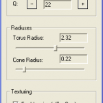</a>
<a href='../../../2001/08/pqtorus/pqtorus_shot_1/index.html' title='pqtorus_shot_1'>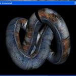</a>
<a href='../../../2001/08/pqtorus/pqtorus_shot_2/index.html' title='pqtorus_shot_2'>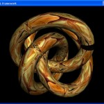</a>
<a href='../../../2001/08/pqtorus/pqtorus_shot_3/index.html' title='pqtorus_shot_3'>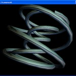</a>

<p>Downloads:</p>
<p>Binary (win32): <a style="text-decoration: none;" href="../../../etc/exper/download/pqtorus.zip">pqtorus.zip</a></p>
]]></content:encoded>
			<wfw:commentRss>http://ohadpr.com/2001/08/pqtorus/feed/</wfw:commentRss>
		<slash:comments>0</slash:comments>
		</item>
		<item>
		<title>Mini-Tracer &amp; Life-Saver</title>
		<link>http://ohadpr.com/2001/08/mini-tracer-life-saver/</link>
		<comments>http://ohadpr.com/2001/08/mini-tracer-life-saver/#comments</comments>
		<pubDate>Sun, 12 Aug 2001 08:14:11 +0000</pubDate>
		<dc:creator>ohad</dc:creator>
				<category><![CDATA[computergaphics]]></category>
		<category><![CDATA[exper]]></category>

		<guid isPermaLink="false">http://ohadpr.com/?p=97</guid>
		<description><![CDATA[Following are two screen-savers. One implements Conway&#8217;s game of life, and the other does Recursive Sphere Ray-tracing. The ray-tracer can be run in &#8216;application mode&#8217; as well, but it&#8217;s pretty nice as a screen-saver. The spheres are lighted using Phong &#8230; <a href="http://ohadpr.com/2001/08/mini-tracer-life-saver/">Continue reading <span class="meta-nav">&#8594;</span></a>]]></description>
			<content:encoded><![CDATA[<p>Following are two screen-savers.</p>
<p>One implements Conway&#8217;s game of life, and the other does Recursive Sphere Ray-tracing.</p>
<p>The ray-tracer can be run in &#8216;application mode&#8217; as well, but it&#8217;s pretty nice  as a screen-saver.</p>
<p>The spheres are lighted using Phong illumination, including Specular-Highlights,  recursion level is limited to your stack, or in other words none</p>

<a href='../../../2001/08/mini-tracer-life-saver/minitracer_shot_1/index.html' title='minitracer_shot_1'></a>
<a href='../../../2001/08/mini-tracer-life-saver/minitracer_shot_2/index.html' title='minitracer_shot_2'></a>
<a href='../../../2001/08/mini-tracer-life-saver/minitracer_shot_3/index.html' title='minitracer_shot_3'></a>
<a href='../../../2001/08/mini-tracer-life-saver/life_shot/index.html' title='life_shot'>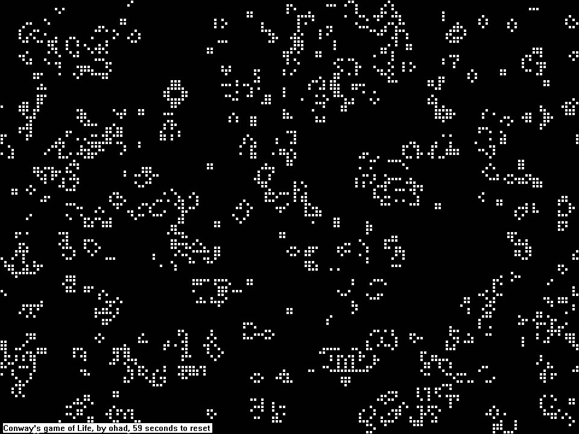</a>

<p><span style="text-decoration: underline;">Downloads :</span></p>
<p>Life Screen-Saver (Source + Win32 Binary) : <a href="../../../etc/exper/download/life_saver.zip"> life_saver.zip</a><br />
Sphere Tracer (Source + Win32 Binary) : <a href="../../../etc/exper/download/mini_tracer.zip"> mini_tracer.zip</a></p>
]]></content:encoded>
			<wfw:commentRss>http://ohadpr.com/2001/08/mini-tracer-life-saver/feed/</wfw:commentRss>
		<slash:comments>0</slash:comments>
		</item>
		<item>
		<title>Earth Simulation + GIS</title>
		<link>http://ohadpr.com/2001/08/earth-simulation-gis/</link>
		<comments>http://ohadpr.com/2001/08/earth-simulation-gis/#comments</comments>
		<pubDate>Sun, 12 Aug 2001 08:14:00 +0000</pubDate>
		<dc:creator>ohad</dc:creator>
				<category><![CDATA[computergaphics]]></category>
		<category><![CDATA[exper]]></category>

		<guid isPermaLink="false">http://ohadpr.com/?p=80</guid>
		<description><![CDATA[After the WTC attacks, CNN started using their Weather-System Simulation Program (I think) to show Afghanistan and Tomahawk missiles flying This looked very nice and moved by the fact that I really didn&#8217;t know too much geography and had a &#8230; <a href="http://ohadpr.com/2001/08/earth-simulation-gis/">Continue reading <span class="meta-nav">&#8594;</span></a>]]></description>
			<content:encoded><![CDATA[<p><span><a name="earth"></a> </span></p>
<p style="text-align: center;">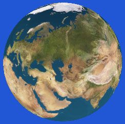</p>
<p><span>After the WTC attacks, CNN started using their Weather-System Simulation Program (I think) to show Afghanistan and Tomahawk missiles flying  </span></p>
<p><span>This looked very nice and moved by the fact that I really didn&#8217;t know too much geography and had a day or two free (Sukkot Holiday), I went on and wrote my own Earth Simulation program.</span></p>
<p><span>The program is based on a large sphere, with a nice texture of the earth is mapped to. You can rotate the earth, zoom-in, etc, etc.</span></p>
<p><span><span style="text-decoration: underline;">What&#8217;s <strong>GIS</strong> you ask ?</span> Well, GIS stands for &#8216;Geographical Information System&#8217;, which actually means adding any type of information layer to a raster or vector map of the world or a portion of it.</span></p>
<p><span> </span></p>
<p><span>What do I have to do with GIS ? After rotating my small earth for a few minute I started to get bored again, so I went on a hunt to find information layers that I could add.</span></p>
<p><span>Here are screenshots of the application in various information-display states : (click the shots to see a larger version)</span><span> <a href="../../../exper/shots/earth_shot_1.jpg"></a></span></p>
<table id="AutoNumber2" style="border-collapse: collapse;" border="0" cellspacing="0" cellpadding="0" width="100%" bordercolor="#111111">
<tbody>
<tr>
<td width="25%" align="center" valign="top"><span> <a href="../../../exper/shots/earth_shot_1.jpg"> </a></span><a href="../../../wp-content/uploads/2008/08/earth_shot_1.jpg">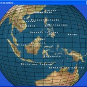</a></p>
<p><span>The world, with Country Names</span></td>
<td width="25%" align="center" valign="top"><a href="../../../wp-content/uploads/2008/08/earth_shot_2.jpg">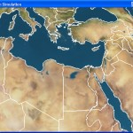</a></p>
<p><span>The world (zooming on Africa and the Middle-East), with coastlines, rivers, lakes, islands and state-borders</span></td>
</tr>
</tbody>
</table>
<table id="AutoNumber2" style="border-collapse: collapse;" border="0" cellspacing="0" cellpadding="0" width="100%" bordercolor="#111111">
<tbody>
<tr>
<td width="25%" align="center" valign="top"><a href="../../../wp-content/uploads/2008/08/earth_shot_3.jpg">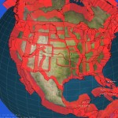</a></p>
<p><span>The world (looking at the USA), with all the vector information including US-State lines and country-names.</span></td>
<td width="25%" align="center" valign="top"><a href="../../../wp-content/uploads/2008/08/earth_shot_4.jpg">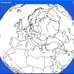</a></p>
<p><span>The world (looking at Europe), without the world texture, and with all the vector information.</span></td>
</tr>
</tbody>
</table>
<p><span style="text-decoration: underline;"><span>Where did the information come from ?</span></span></p>
<p><span>The information about the <strong>location of the Countries</strong> came from something called &#8216;The CIA FactBook 2000&#8242;. It&#8217;s basically an html page with links to about 200+ countries, each one has a page with facts (including Latitude/Longitude information). I downloaded all the pages using Flashget&#8217;s &#8216;Download All&#8217; (thank god for that option), and wrote a small program that fetches all the countries names and positions and generates a &#8216;.H&#8217; file with all this information.</span></p>
<p><span>Vector information on Coastlines, Political Boundaries, Rivers, Lakes, Islands and US-States was much harder to get.<br />
I searched for a long time and eventually picked up the basic binary data from the <strong><span style="text-decoration: underline;"> <a href="http://www.ngdc.noaa.gov/seg/eco/cdroms/gedii_b/datasets/b14/mw.htm"> Pospeschil <em>Micro World Data Bank II</em></a></span></strong><em>.</em> I couldn&#8217;t manage to understand the format or find any explanation of it. I then used a trial-version of a program called <strong><a href="http://www.clarklabs.org/"> Idrisi</a> </strong>to convert the pairs of the &#8216;.vec&#8217; and &#8216;dvc&#8217; files into &#8216;.vct&#8217; and &#8216;.vdc&#8217; (these are also binary files). I then used the same program to read in the &#8216;.vct&#8217; and &#8216;.vdc&#8217; files and write out &#8216;.vxp&#8217; files. Now, the &#8216;.vxp&#8217; files are an easily understandable text-representation of the vector data. I wrote something small to convert the &#8216;.vxp&#8217; ASCII files into a binary equivilant (Binary Vector Data &#8211; &#8216;.bvd&#8217;) [this isn't a public format, just something I hacked for fast loading]. And eventually our program uses the &#8216;.bvd&#8217; files directly  </span></p>
<p><span>The small conversion programs are included with the source-code provided below. I didn&#8217;t include all the versions of the data because they take almost 10MB alltogether.</span></p>
<p><span><span style="text-decoration: underline;">Now, What can we do with the program (function-wise) ?</span></span></p>
<p><span> 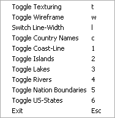</span></p>
<p><span>You can enable/disable the big Earth-Texture.<br />
You can enable/disable Wire-Frame mode.<br />
You can play with the line-width used by the wire-frame mode and the vector-data.<br />
You can enable/disable the display of Country-Names.<br />
You can seperately enable/disable the display of all the vector-layers (Coast-Lines, Islands, Lakes, Rivers, Nation Boundaries and US-States).</span></p>
<p><span style="text-decoration: underline;"><span>Some Notes on the application itself :</span></span></p>
<p><span>Use the mouse and it&#8217;s left-button to rotate earth. Hold down Ctrl before you  hit the left mouse button to scale the earth. Right-Click the window to get the  options menu. Note that options are controllable by keyboard too.</span></p>
<p><span>Country Names are shown based on Z, the more you  zoom in the more country-names appear. Countries are shown using small red  sine-scaling glutSolidCubes.</span></p>
<p><span style="text-decoration: underline;"> <span>Some notes on the 3D :</span></span></p>
<p><span>I used <strong>OpenGL</strong> for this one, it was simple and  straightforward. I generate a large sphere for the earth, use glSolidCubes for  the countries, and simple GL_LINE_STRIPs for the vector-data. There are no  display-lists or any other optimizations, I just throw everything at the card  </span></p>
<p><span>I used <strong> <a href="http://www.xmission.com/~nate/glut.html">glut</a></strong> for wrapping up  all of Windows&#8217;s internal calls, mainly because the first app-skeleton I  found used it and provided some minimal texture-loading calls. Apparently the  skeleton is by <em>Andreas Gustafsson</em>, I  can&#8217;t remember where exactly I found it, sorry.</span></p>
<p><span>I used a font library called <strong> <a href="http://nate.scuzzy.net/programming/gltexfont/">glTexFont</a></strong> by <em> Nate Miller</em>, it uses the Quake3 Font, cool  </span></p>
<p><span>Some thanks to the people at #opengl (efnet I  believe) for helping me correctly placing the country-names (especially f00Dave,  thanks for all the help).</span></p>
<p><span><span style="text-decoration: underline;">Downloads :</span></span></p>
<p><span>Binary (win32) + Source: <a href="../../../etc/exper/download/earth_simul.zip">earth_simul.zip</a><br />
</span></p>
<p><span>The source is provided for your enjoyment,  free-use, modification, etc. Feel free to contact me if you find a bug, add a  feature, or anything alike.</span></p>
<hr />
]]></content:encoded>
			<wfw:commentRss>http://ohadpr.com/2001/08/earth-simulation-gis/feed/</wfw:commentRss>
		<slash:comments>6</slash:comments>
		</item>
		<item>
		<title>Always Picture</title>
		<link>http://ohadpr.com/2001/08/always-picture/</link>
		<comments>http://ohadpr.com/2001/08/always-picture/#comments</comments>
		<pubDate>Sun, 12 Aug 2001 08:13:45 +0000</pubDate>
		<dc:creator>ohad</dc:creator>
				<category><![CDATA[computergaphics]]></category>
		<category><![CDATA[exper]]></category>

		<guid isPermaLink="false">http://ohadpr.com/?p=108</guid>
		<description><![CDATA[Always picture is a small program that I wrote for my girlfriend to try and cheer her up during long working hours. It allows you to scatter bitmaps on your screen and continue working with these bitmaps on-top of you &#8230; <a href="http://ohadpr.com/2001/08/always-picture/">Continue reading <span class="meta-nav">&#8594;</span></a>]]></description>
			<content:encoded><![CDATA[<p style="text-align: center;">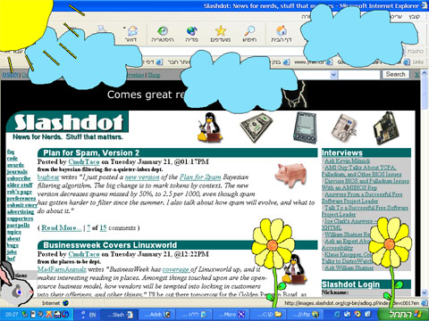</p>
<p>Always picture is a small program that I wrote for my girlfriend to try and cheer her up during long working hours. It allows you to scatter bitmaps on your screen and continue working with these bitmaps on-top of you screen&#8217;s contents.</p>
<p>You can give images speed, to get clouds moving on the top of your screen   (they come back from the other side once they disappear).</p>
<p>You can close all of your pictures with a menu that pops when you right-click images.</p>
<p>Using the mouse you can easily drag and drop the picture to anywhere you want on the desktop.</p>
<p>The app uses a feature introduced in Win2000 called &#8216;Layered Window Attributes&#8217; that allows to easily use color-keying and alpha-blending on entire windows.</p>
<p>Download ( Source + Win32 Binary ) : <a href="../../../etc/exper/download/alwayspicture.zip">AlwaysPicture.zip</a></p>
]]></content:encoded>
			<wfw:commentRss>http://ohadpr.com/2001/08/always-picture/feed/</wfw:commentRss>
		<slash:comments>1</slash:comments>
		</item>
	</channel>
</rss>

<!-- Localized -->